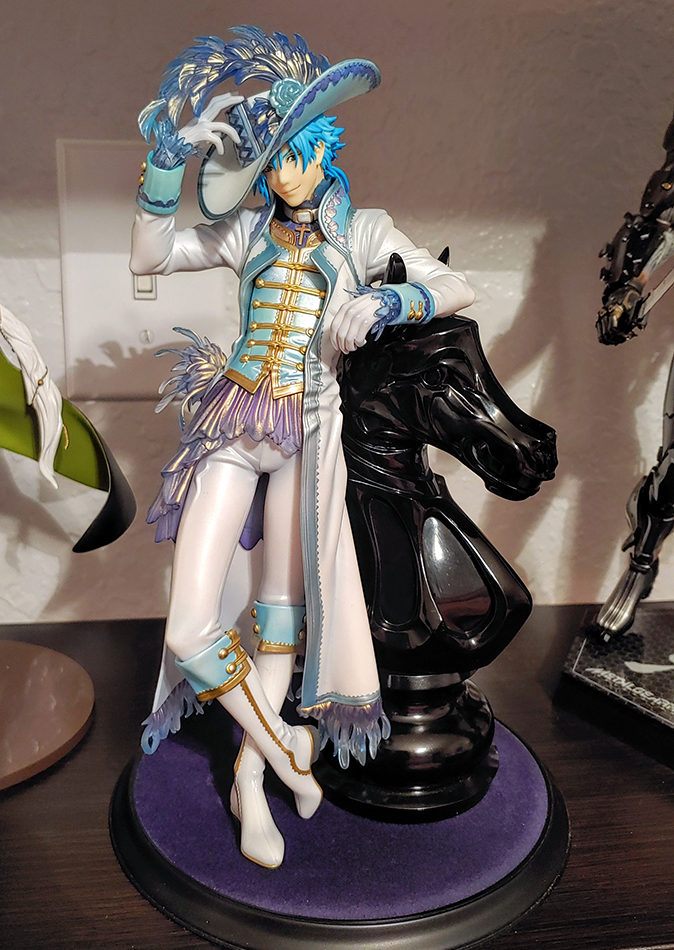

As you're buying more figures to further your collection, don't simply forget to maintain your display. If you don't have a proper setup for your figurines, you might end up damaging them or lowering their quality just through neglect. I've noted the main things to keep in mind to leave your display in tip-top shape!
This is made to be a very beginner-friendly maintenance guide, so you should be able to manage even if your collecting is much more on the casual side.
Most people logically assume this goes for anything on display, but you'd be surprised at how easy it is to forget.
Setting yourself reminders to dust them all off at least once a month is a great to ensure you don't just leave them sitting there.
Have delicate brushes and cloths to sweep off any dust that accumulates, and a canned air duster for figures with crevices.
Simple enough concept. Most figurines are made of plastic, or something similar, which don't do well with extreme temperature shifts.
Keep them fairly regulated at around 70 degrees and they should be just fine.
One of easiest mistakes to make when beginners first put up their display is putting the figures in direct view of the sun.
Don't do this! Leaving your figures exposed to the sun for a long period of time will damage the coloring, making them appear faded. It can even cause the paint on the figures to peel, so it's best to keep your shelves out of direct sunlight.
With all of these steps in mind though, your collection should easy to even just casually maintain!